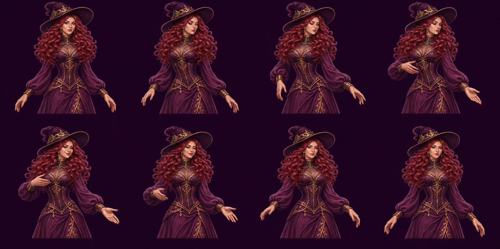

Вернуться к полю · Источник и статус
PRODUCED · художественная приёмка PENDING. Новый лист перерисованных поз по исходному взрослому персонажу. Это концепт для разбора анатомии и пластики; готового четырёхсекундного цикла здесь нет.

Проверить: одно лицо/костюм; объём плеч; локти/проекция кистей и пять пальцев; сдержанность SMALL_WIN; видимость жеста на телефоне. Первая и восьмая позы пока различаются: seam и скорость не проверены. MEDIUM/BIG/BONUS не произведены. В игре по умолчанию оставлен нейтральный портрет для просмотра поля.
Движение сформулировано из brief. Видео исполнителей не скачивалось и не использовалось как генерационный вход. Принятие художественного решения — отдельный просмотр PO.